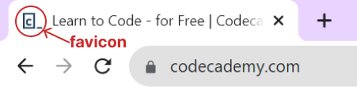
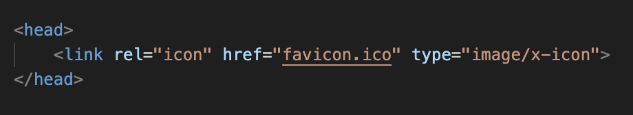

Un favicon (abrebiación de "favorite icon") es una pequeña imagen o ícono que aparece en las pestañas de los navegadores, junto al título de la página web. Es como el logo en miniatura de tu sitio web.

Para que tu página web muestre el favicon, debes agregar una línea en la sección <head> de tu documento HTML. Así es como se ve:

- link: Es una etiqueta que se usa para enlazar recursos externos.
- rel="icon": Le dice al navegador que el archivo que estamos enlazando es el favicon.
- href="favicon.ico": Aquí es donde pones el nombre o la ruta del archivo de tu favicon.
- type="image/x-icon": Le indica al navegador que el tipo de archivo es un ícono.